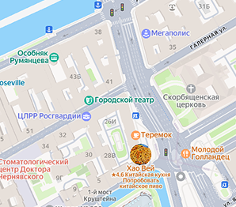
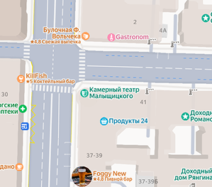

Санкт-Петербургский Городской театр — это театр без четвертой стены, живой и демократичный. Он был создан в концепции “молодые для молодых” и органично соединяет современный театральный язык и традиции русской классической театральной школы. Театр не работает в узкой зоне эксперимента, а стремится быть понятным для всех и сделать из зрителя активного соучастника и соавтора театрального процесса.

Адрес: Галерная улица, 43
Уютное, но очень маленькое пространство, где нет места для буфета и практически отсутствует фойе. Театр продолжает традицию формирования интеллектуального репертуара, рассчитанного на зрителя, готового чувствовать и размышлять в театре. Камерность зала, в котором действие происходит вблизи от зрителя, способствует наибольшему «подключению» к происходящему на сцене, сочувствию и сопереживанию героям.

Адрес: Восстания, 41
Театр называется «Плохой», так как не имеет привычных атрибутов хорошего театра. Театр не продаёт билеты. Каждый зритель после спектакля может оставить donation, если хочет и сколько хочет. За неделю до каждого спектакля проводится регистрация на спектакль (она закрывается за несколько секунд!) в социальных сетях театра. В «Плохом» нет постоянной труппы и никто не получает заработной платы.